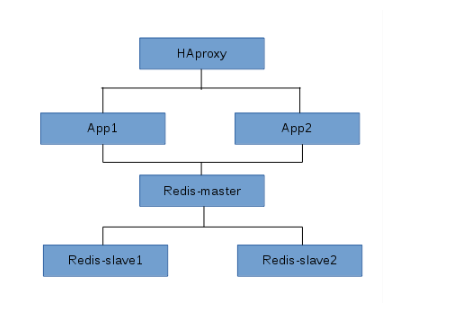
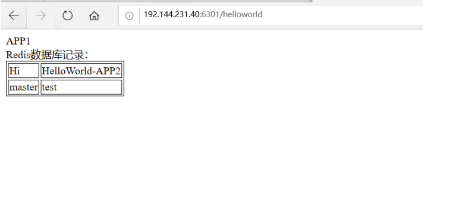
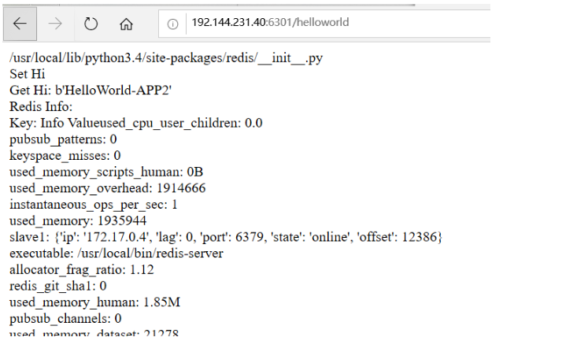

Contents
搭建一个Web应用栈¶
搭建一个包含6个节点的Docker应用栈,包括一个代理节点，两个web应用节点，一个主数据库节点， 两个从数据库节点。
应用栈具体结构图，如下
1.获取应用栈各节点所需的镜像¶
# 配置一个加速器
curl -sSL https://get.daocloud.io/daotools/set_mirror.sh | sh -s http://f1361db2.m.daocloud.io
# 从Docker Hub获取Haproxy、Redis、Django的镜像。
docker pull ubuntu:14.04
docker pull haproxy
docker pull redis
docker pull django
查看镜像一切就绪
[root@docker-test centos]# docker images
REPOSITORY TAG IMAGE ID CREATED SIZE
docker.io/redis latest 9b188f5fb1e6 6 days ago 98.2 MB
docker.io/haproxy latest ecca7e36582a 11 days ago 92.3 MB
docker.io/ubuntu 14.04 6e4f1fe62ff1 2 weeks ago 197 MB
docker.io/django latest eb40dcf64078 3 years ago 436 MB
2. 启动各个栈节点¶
· 启动redis-Master容器节点
· 两个redis-Slave容器节点启动时链接到redis-master
· 两个APP容器节点启动时链接到redis-master
· HAProxy容器节点启动时链接到两个APP节点
· 说明：为了能够从外网访问应用栈，并通过HAProxy节点访问应用栈中的APP，启动HAProxy节点时必须使用 -p参数将端口暴露给主机
启动Redis容器（创建容器）
docker run -it --name redis-master redis /bin/bash
docker run -it --name redis-slave1 --link redis-master:master redis /bin/bash
docker run -it --name redis-slave2 --link redis-master:master redis /bin/bash
· 说明：启动之后不要exit退出，使用ctrl+p,ctrl+q退出，（容器不关闭）
查看已启动的容器 docker ps
[root@docker-test centos]# docker ps
CONTAINER ID IMAGE COMMAND CREATED STATUS PORTS NAMES
7033abd05eed redis "docker-entrypoint..." 38 seconds ago Up 37 seconds 6379/tcp redis-slave2
6e8923271c96 redis "docker-entrypoint..." About a minute ago Up About a minute 6379/tcp redis-slave1
301c0e670ab2 redis "docker-entrypoint..." About a minute ago Up About a minute 6379/tcp redis-master
启动Django容器
docker run -it --name APP1 --link redis-master:db -v ~/Projects/Django/APP1:/usr/src/app django /bin/bash
docker run -it --name APP2 --link redis-master:db -v ~/Projects/Django/APP2:/usr/src/app django /bin/bash
root@b9032e85813f:/# [root@docker-test centos]# docker ps
CONTAINER ID IMAGE COMMAND CREATED STATUS PORTS NAMES
b9032e85813f django "/bin/bash" 46 seconds ago Up 45 seconds APP2
91df41a13751 django "/bin/bash" About a minute ago Up About a minute APP1
7033abd05eed redis "docker-entrypoint..." 2 minutes ago Up 2 minutes 6379/tcp redis-slave2
6e8923271c96 redis "docker-entrypoint..." 3 minutes ago Up 3 minutes 6379/tcp redis-slave1
301c0e670ab2 redis "docker-entrypoint..." 3 minutes ago Up 3 minutes 6379/tcp redis-master
启动HAProxy容器
docker run -it --name HAProxy --link APP1:APP1 --link APP2:APP2 -p 6301:6301 -v ~/Projects/HAProxy:/tmp haproxy /bin/bash
每个容器启动时都分配了一个终端，在 /bin/bash下
所有容器信息如下：
[root@docker-test centos]# docker ps
CONTAINER ID IMAGE COMMAND CREATED STATUS PORTS NAMES
0971025923a2 haproxy "/docker-entrypoin..." 21 seconds ago Up 20 seconds 0.0.0.0:6301->6301/tcp HAProxy
b9032e85813f django "/bin/bash" About a minute ago Up About a minute APP2
91df41a13751 django "/bin/bash" 2 minutes ago Up 2 minutes APP1
7033abd05eed redis "docker-entrypoint..." 3 minutes ago Up 3 minutes 6379/tcp redis-slave2
6e8923271c96 redis "docker-entrypoint..." 4 minutes ago Up 4 minutes 6379/tcp redis-slave1
301c0e670ab2 redis "docker-entrypoint..." 4 minutes ago Up 4 minutes 6379/tcp redis-master
3.应用栈容器节点配置¶
volume应用说明
· 在应用栈的个容器节点都启动后，需要对他们进行配置和修改，以便使他们实现特定功能和通信协作，在linux系统下，可以利用volume来实现文件的创建（利用-v 参数挂载volume,在主机和容器间共享数据，这样就可以直接在主机上创建和编辑相关启动配置文件）
· 查看volume挂载情况 docker inspect -f'{{.Mounts}}'+容器名或id
· 示例:docker inspect -format'{{.Mounts}}' redis-master
· 显示出来的为
[root@docker-test centos]# docker inspect -f'{{.Mounts}}' redis-master
[{volume 21965b817d218f079101e22b7ed7bd33a53f32dbafeebb343d433fc28215aa5d /var/lib/docker/volumes/21965b817d218f079101e22b7ed7bd33a53f32dbafeebb343d433
fc28215aa5d/_data /data local true }]
· 可以看出，redis-master的volume 在宿主机上为目录/var/lib/docker/volumes/5920a23b5e230a449230bbd4807912793bbc3bab0a05ae085ff95423301f0d6c/_data，在容器中为/data · 在宿主机上创建redis的启动配置文件redis.conf
Redis Master配置¶
# 是否作为守护进程运行，生产环境用yes
daemonize yes
# 如果作为守护进程运行的话，redis会把pid打印到这个文件
# 主要多实例的时候需要写成不同的文件
pidfile /var/run/redis.pid
# redis监听的端口，注意多实例的情况
port 6379
# 允许访问redis的ip
# 测试环境注释该选项，生产环境把所有允许访问的ip都打一次
# bind xxx.xxx.xxx.xxx
# 关闭无消息的客户端的间隔，0为关闭该功能
timeout 0
# 对客户端发送ACK信息，linux中单位为秒
tcp-keepalive 0
# 数据库的数量，我们的游戏建议为1，然后多开实例
databases 1
################################################################################
# redis 的持久化配置 #
################################################################################
# save 间隔 最小更新操作
# 900秒（15分钟）之后，且至少1次变更
# 300秒（5分钟）之后，且至少10次变更
# 60秒之后，且至少10000次变更
# 如果完全作为缓存开启把save全删了
# save 900 1
# save 300 10
# save 60 2000
# 持久化失败以后，redis是否停止
stop-writes-on-bgsave-error no
# 持久化的时候是否运行对字符串对象进行压缩，算法为LZF
rdbcompression yes
# 文件末尾是否包含一个CRC64的校验和
rdbchecksum yes
# 是否开启主从同步
# slaveof master 6379
# redis存储数据的文件，注意多实例的时候该不同名字或者用不同的工作目录
dbfilename dump.rdb
# redis的工作目录，注意多实例的时候该不同名字或者用不同的工作目录
# 建议用不同的工作目录
#唐永光改这里改了好多次
dir ./
################################################################################
# redis 的限制 #
################################################################################
maxmemory 2gb
maxmemory-policy allkeys-lru
# LRU和最小TTL算法的实现都不是很精确，但是很接近（为了省内存），所以你可以用样例做测试。
# 例如：默认Redis会检查三个key然后取最旧的那个，你可以通过下面的配置项来设置样本的个数。
#
# maxmemory-samples 3
################################################################################
# redis 的累加模式 #
################################################################################
# 默认情况下，Redis是异步的把数据导出到磁盘上。这种情况下，当Redis挂掉的时候，最新的数据就丢了。
# 如果不希望丢掉任何一条数据的话就该用纯累加模式：一旦开启这个模式，Redis会把每次写入的数据在接收
# 后都写入 appendonly.aof 文件。
# 每次启动时Redis都会把这个文件的数据读入内存里。
#
# 注意，异步导出的数据库文件和纯累加文件可以并存（你得把上面所有"save"设置都注释掉，关掉导出机制）。
# 如果纯累加模式开启了，那么Redis会在启动时载入日志文件而忽略导出的 dump.rdb 文件。
#
# 重要：查看 BGREWRITEAOF 来了解当累加日志文件太大了之后，怎么在后台重新处理这个日志文件。
appendonly no
# 纯累加文件名字（默认："appendonly.aof"）
# appendfilename appendonly.aof
# 纯累加文件的flush频率
# always -> 每次写入都flush，最安全，资源开销最大
# everysec -> 每秒 (推荐)
# no -> 由系统确定
# appendfsync always
appendfsync everysec
################################################################################
# redis 的高级配置 #
################################################################################
# 如果hash中的数量超出hash-max-ziplist-entries，或者value的长度超出
# hash-max-ziplist-value，将改成保存dict，否则以ziphash的方式存储以节省空间。以下同理。
hash-max-ziplist-entries 64
hash-max-ziplist-value 128
list-max-ziplist-entries 64
list-max-ziplist-value 128
set-max-intset-entries 64
zset-max-ziplist-entries 64
zset-max-ziplist-value 128
# 是否resize hash? 如果你设置成no需要在源码做一定的修改以防止有人进行hash攻击
activerehashing yes
################################################################################
# redis 的其他配置文件 #
################################################################################
# 日志配置
# include /etc/redis/log.conf
# 主从配置
# include /etc/redis/slave.conf
# 安全配置
# include /etc/redis/security.conf
# LUA配置
# include /etc/redis/lua.conf
· 容器启动之后，执行进入容器内部 docker attach 容器名称或id
· 容器没启动，执行直接进入容器终端docker exec -it redis-master /bin/bash
· 进入到容器内部的共享目录/data下执行 cp redis.conf /usr/local/bin
· 进入容器工作目录 cd /usr/local/bin可ls查看有没有相关的redis.conf文件
· 启动redis : redis-server redis.conf
· 退出大多用ctrl+p+q或exit
[root@docker-test _data]# docker attach 301c0
root@301c0e670ab2:/data# cd /data/
root@301c0e670ab2:/data# cp redis.conf /usr/local/bin
root@301c0e670ab2:/usr/local/bin# ls
docker-entrypoint.sh gosu redis-benchmark redis-check-aof redis-check-rdb redis-cli redis-sentinel redis-server redis.conf
root@301c0e670ab2:/usr/local/bin# redis-server redis.conf
32:C 09 Jan 2020 03:01:02.699 # oO0OoO0OoO0Oo Redis is starting oO0OoO0OoO0Oo
32:C 09 Jan 2020 03:01:02.700 # Redis version=5.0.7, bits=64, commit=00000000, modified=0, pid=32, just started
32:C 09 Jan 2020 03:01:02.700 # Configuration loaded
说明1：redis-master数据库节点只要redis-conf文件配置对，放在共享目录里，就不需要在主机里执行cp操作，只有进入容器中才用得到cp操作
说明2： 说明：配置文件里需要修改的是 daemonize yes 注意是将no修改为yes，使Redis在容器前端运行，在前端运行时无法进行其他操作，可以再开一个终端 。 pidfile /var/run/redis.pid
Redis slave1和redis slave从数据库容器节点配置¶
redisslave从数据库容器节点配置与主数据库配置类似，先 docker inspect -f'{{.Mounts}}'+容器名或id 查看volume中主机与容器之间的共享位置是什么，然后再进入主机上的容器共享数据位置创建启动配置文件redis.conf
· 查看redis-slave1在主机上的共享目录位置
docker inspect -f '{{.Mounts}}' redis-slave1
· 进入共享目录位置cd /var/lib/docker/volumes/ee46cfb08cd17109f0b723f2171ab70808a4add91fa94b017b5e5c85959b031c/_data
· 创建从数据库配置文件vim redis.conf（配置文件里的内容为主数据库里的内容）
· 修改配置1：daemonize yes 注意是将no修改为yes，使Redis在容器前端运行，在前端运行时无法进行其他操作，可以再开一个终端。
· 修改配置2：pidfile /var/run/redis.pid
· 修改配置3：slaveof master 6379（文件中没有，自己添加进去）
· 进入redis-slave1容器终端docker attach redis-slave1
· 将redis.conf文件cp到容器的执行目录cp redis.conf /usr/local/bin
· 进入到 cd /usr/local/bin
· 执行redis-slave1启动命令redis-server redis.conf
· 此时可以查看redis-slave1中的信息 redis-cli
root@6e8923271c96:/usr/local/bin# redis-cli info
# Server
redis_version:5.0.7
.......
# Replication
role:slave
master_host:master
master_port:6379
主数据库容器节点测试¶
· 进入redis-master主容器节点存储数据 docker exec -it redis-master /bin/bash
· redis-cli
· set master test#存数据
· get master#查看数据
[root@docker-test _data]# docker exec -it redis-master /bin/bash
root@301c0e670ab2:/data# redis-cli
127.0.0.1:6379> set master test
OK
127.0.0.1:6379> get master
"test"
[root@docker-test _data]# docker exec -it redis-slave1 /bin/bash
root@6e8923271c96:/data# redis-cli
127.0.0.1:6379> get master
"test"
此时主数据库存的数据，从数据库已经同步到了!
redis-slave2的配置同上
[root@docker-test _data]# docker attach redis-slave2
root@7033abd05eed:/data# ls
redis.conf
root@7033abd05eed:/data# cp redis.conf /usr/local/bin/
root@7033abd05eed:/data# cd /usr/local/bin/
root@7033abd05eed:/usr/local/bin# redis-server redis.conf
10:C 09 Jan 2020 03:08:59.145 # oO0OoO0OoO0Oo Redis is starting oO0OoO0OoO0Oo
10:C 09 Jan 2020 03:08:59.145 # Redis version=5.0.7, bits=64, commit=00000000, modified=0, pid=10, just started
10:C 09 Jan 2020 03:08:59.145 # Configuration loaded
root@7033abd05eed:/usr/local/bin#
root@7033abd05eed:/usr/local/bin# redis-cli info
# Server
redis_version:5.0.7
redis_git_sha1:00000000
redis_git_dirty:0
......
# Replication
role:slave
master_host:master
master_port:6379
APP容器节点（Django）的配置¶
· Django容器启动后，需要利用Django框架，开发一个简单的Web程序。为了访问数据库，需要在容器中安装Python的Redis支持包
· 进入Django容器内部docker exec -it APP1 /bin/bash
· 更新匹配并安装Python语言的Redis支持包:
· pip install --upgrade pip
· pip install redis
测试是否安装成功（分部执行）
>>> import redis
>>> print(redis.__file__)
/usr/local/lib/python3.4/site-packages/redis/__init__.py
>>> exit()
创建APP
在容器中操作APP1
在容器的volume目录/usr/src/app下，执行 如下命令
临时关闭selinux
setenforce 0
· cd /usr/src/app/
· mkdir dockerweb
· cd dockerweb
· django-admin.py startproject redisweb
· cd redisweb
· python manage.py startapp helloworld
在容器中创建APP后，切换到宿主机的volume目录~/Projects/Django/App1下：
cd ~/Projects/Django/APP1
cd dockerweb/redisweb/helloworld/
ls
修改vim views.py内容如下（此views.py内容为APP11里的内容）
[root@docker-test helloworld]# cat views.py
# -*- coding: utf-8 -*-
from django.shortcuts import render
from django.http import HttpResponse
# Create your views here.
import redis
def hello(request):
red = 'APP1<br>Redis数据库记录：<br><table border="1">'
# 如果设置过Redis密码请在参数中加上password='你的密码',
pool = redis.ConnectionPool(host='db', port=6379, db=0)
r = redis.StrictRedis(connection_pool=pool)
pipe = r.pipeline()
pipe_size = 100000
len = 0
key_list = []
print (r.pipeline())
keys = r.keys()
for key in keys:
key_list.append(key)
pipe.get(key)
if len < pipe_size:
len += 1
else:
for (k, v) in zip(key_list, pipe.execute()):
print (k, v, '')
len = 0
key_list = []
for (k, v) in zip(key_list, pipe.execute()):
red = red + '<tr><td>%s</td><td>%s</td></tr>' % (k.decode(), v.decode())
red = red + '</table>'
return HttpResponse(red)
此views.py为APP2的内容：
#APP2的内容
from django.shortcuts import render
from django.http import HttpResponse
# Create your views here.
import redis
def hello(requset):
str=redis.__file__
str+="<br>"
r = redis.Redis(host='db', port=6379, db=0)
info = r.info()
str+=("Set Hi <br>")
r.set('Hi', 'HelloWorld-APP1')
str+=("Get Hi: %s <br>" % r.get('Hi'))
str+=("Redis Info: <br>")
str+=("Key: Info Value")
for key in info:
str+=("%s: %s<br>" % (key, info[key]))
return HttpResponse(str)
· 注意，连接Redis数据库时，使用–link参数创建db连接来代替具体的IP地址；同理，对于APP2，使用想要的db连接即可。
· 接下来，修改redisweb项目的配置文件vim settings.py，添加新建的helloworld应用：
# cd ../redisweb
# ls
__init__.py __pycache__ settings.py urls.py wsgi.py
# vim settings.py
在settings.py文件中的INSTALLED_APPS选项下添加helloworld， 将ALLOWED_HOSTS = []修改为ALLOWED_HOSTS = ['*'] ：
# Application definition
ALLOWED_HOSTS = ["*"]
INSTALLED_APPS = [
'django.contrib.admin',
'django.contrib.auth',
'django.contrib.contenttypes',
'django.contrib.sessions',
'django.contrib.messages',
'django.contrib.staticfiles',
'helloworld',
]
·最后，修改同目录下的redisweb项目的模板文件urls.py，它将设置访问应用的URL模式，并为URL模式调用的视图函数之间的映射表： vim urls.py
· 在url.py文件中，引入helloworld应用的hello视图，并为hello视图添加一个urlpatterns变量。修改后的urls.py文件如下：
[root@docker-test redisweb]# cat urls.py
"""redisweb URL Configuration
The `urlpatterns` list routes URLs to views. For more information please see:
https://docs.djangoproject.com/en/1.10/topics/http/urls/
Examples:
Function views
1. Add an import: from my_app import views
2. Add a URL to urlpatterns: url(r'^$', views.home, name='home')
Class-based views
1. Add an import: from other_app.views import Home
2. Add a URL to urlpatterns: url(r'^$', Home.as_view(), name='home')
Including another URLconf
1. Import the include() function: from django.conf.urls import url, include
2. Add a URL to urlpatterns: url(r'^blog/', include('blog.urls'))
"""
from django.conf.urls import url
from django.contrib import admin
urlpatterns = [
url(r'^admin/', admin.site.urls),
url(r'^helloworld$/', hello),
]
·在容器的主机修改完这几个文件之后再进入容器，在目录/usr/src/app/dockerweb/redisweb下完成项目的生成：
# docker exec -it APP1 /bin/bash
# cd /usr/src/app/dockerweb/redisweb/
# python manage.py makemigrations
# python manage.py migrate
root@34f153ac72a3:/usr/src/app/dockerweb/redisweb# python manage.py migrate
Operations to perform:
Apply all migrations: admin, auth, contenttypes, sessions
Running migrations:
Applying contenttypes.0001_initial... OK
Applying auth.0001_initial... OK
Applying admin.0001_initial... OK
Applying admin.0002_logentry_remove_auto_add... OK
Applying contenttypes.0002_remove_content_type_name... OK
Applying auth.0002_alter_permission_name_max_length... OK
Applying auth.0003_alter_user_email_max_length... OK
Applying auth.0004_alter_user_username_opts... OK
Applying auth.0005_alter_user_last_login_null... OK
Applying auth.0006_require_contenttypes_0002... OK
Applying auth.0007_alter_validators_add_error_messages... OK
Applying auth.0008_alter_user_username_max_length... OK
Applying sessions.0001_initial... OK
· APP1容器的配置已经完成，同理配置APP2。至此应用栈APP节点配置完成。
app2上也要安装
· pip install --upgrade pip
· pip install redis
容器节点（Django）的配置的说明：创建配置文件是在容器内，但文件的配置是在主机上，编译运行又是在各个容器中各自进行
启动APP1和APP2
在启动App的Web服务器时，可以指定服务器的端口和IP地址。 为了通过HAProxy容器节点接受外网所有的公共IP地址访问，实现均衡负载，需要指定服务器的IP地址和端口。
对App1使用8001端口，App2使用8002端口，同时，都是用0.0.0.0地址。 启动服务器的过程如下：
[root@docker-test redisweb]# docker exec -it APP1 /bin/bash
root@34f153ac72a3:/# cd /usr/src/app/dockerweb/redisweb/
root@34f153ac72a3:/usr/src/app/dockerweb/redisweb# python manage.py runserver 0.0.0.0:8001
Performing system checks...
System check identified no issues (0 silenced).
January 09, 2020 - 05:05:03
Django version 1.10.4, using settings 'redisweb.settings'
Starting development server at http://0.0.0.0:8001/
Quit the server with CONTROL-C.
[root@docker-test redisweb]#
[root@docker-test redisweb]#
[root@docker-test redisweb]# docker exec -it APP2 /bin/bash
root@93259a17e4f8:/# cd /usr/src/app/dockerweb/redisweb/
root@93259a17e4f8:/usr/src/app/dockerweb/redisweb# python manage.py runserver 0.0.0.0:8002
Performing system checks...
System check identified no issues (0 silenced).
January 09, 2020 - 05:05:38
Django version 1.10.4, using settings 'redisweb.settings'
Starting development server at http://0.0.0.0:8002/
Quit the server with CONTROL-C.
至此，APP节点启动完毕更多app可按照上面配置。
4.Haproxy容器节点配置¶
· 说明：所有对应用栈的访问均通过HAproxy负载均衡代理容器节点实现负载均衡，使外网能够访问到app节点
haproxy文件配置
· 启动时挂载的volume将HAproxy的启动配置文件复制到容器中，在宿主机的volumes目录~/Projects/HAProxy/下
· cd ~/Projects/HAProxy/
· vim haproxy.cfg（其中的代码如下）
[root@docker-test HAProxy]# cat haproxy.cfg
global
log 127.0.0.1 local0
maxconn 4096
chroot /usr/local/sbin
daemon
nbproc 4
pidfile /usr/local/sbin/haproxy.pid
defaults
log 127.0.0.1 local3
mode http
option dontlognull
option redispatch
retries 2
maxconn 2000
balance roundrobin
timeout connect 5000ms
timeout client 50000ms
timeout server 50000ms
listen redis_proxy
bind 0.0.0.0:6301
stats enable
bind-process 2 #让它跑在两颗CPU上
stats uri /haproxy-stats
stats auth phil:NRG93012
server APP1 APP1:8001 check inter 2000 rise 2 fall 5
server APP2 APP2:8002 check inter 2000 rise 2 fall 5
[root@docker-test HAProxy]# docker inspect -f '{{.Mounts}}' HAProxy
[{bind /root/Projects/HAProxy /tmp true rprivate}]
· 随后，进入容器的volume目录/tmp下，将Haproxy的启动配置文件复制到HAproxy的工作目录~/Projects/HAProxy/：
[root@docker-test HAProxy]# docker exec -it HAProxy /bin/bash
root@9ec53e72ee17:/# cd tmp/
root@9ec53e72ee17:/tmp# cp haproxy.cfg /usr/local/sbin/
root@9ec53e72ee17:/tmp# cd /usr/local/sbin/
root@9ec53e72ee17:/usr/local/sbin# ls
haproxy haproxy.cfg
root@9ec53e72ee17:/usr/local/sbin# haproxy -f haproxy.cfg
5.应用访问测试¶
在浏览器中输入IP地址:6301/helloworld即可看到App的views，刷新页面可以看到两个不同的页面，也可以改一下app的名字就可以专门访问不同的app了。 说明：下面第一张图为APP1的视图，第二张为APP2的视图
APP1 
root@93259a17e4f8:/# [root@docker-test redisweb]# docker exec -it APP1 /bin/bash
root@34f153ac72a3:/# ps aux
USER PID %CPU %MEM VSZ RSS TTY STAT START TIME COMMAND
root 169 0.2 1.4 110256 26472 ? S+ 05:33 0:00 python manage.py runserver 0.0.0.0:8001
root 171 3.6 1.6 263624 30148 ? Sl+ 05:33 0:09 /usr/local/bin/python manage.py runserver 0.0.0.0:8001
root 175 1.3 0.1 21940 2064 ? Ss 05:37 0:00 /bin/bash
root 180 0.0 0.0 19176 1296 ? R+ 05:37 0:00 ps aux
root@34f153ac72a3:/# kill -9 171
APP1出现故障后，APP2的界面 
访问IP地址:6301/haproxy-stats可以查看HAProxy当前状态
参考文献